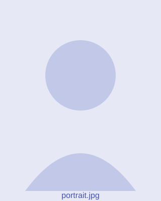

Professor
Dept. of Astronomy & Astrophysics
Tata Institute of Fundamental Research, Mumbai
Prof. Subha Majumdar is a cosmologist at the Tata Institute of Fundamental Research, Mumbai. His research spans the theory and observation of large-scale structure, galaxy clusters and the cosmic microwave background, with a strong emphasis on statistical methods and survey science.
Google Scholar · INSPIRE-HEP · NASA ADS · ORCID · arXiv